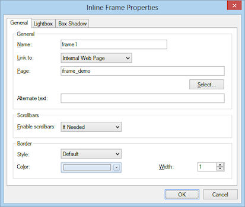
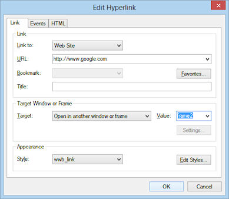

How to use Inline Frames
You can create a floating frame, also called an inline frame, that appears within the content of a Web page. You can either display a page from your own web site or refer to an external URL.
Example:
You can create a floating frame, also called an inline frame, that appears within the content of a Web page. You can either display a page from your own web site or refer to an external URL.
Example:
Select Insert->Standard->Inline Frame from the menu and draw a box to indicate the position of the inline frame. You can also select Inline Frame in the toolbox. Double click the object to display the Inline Frame Properties.

Name
Used to set a name for the inline frame.
Link to
Web Site: display a page from an external web site.
Syntax: http://www.google.com
Internal Web Page
Display one of the pages of your web site. Click 'Select' to choose a page. The Select Page window will show all the pages which are part of the current web site project. Web Builder will automatically create to correct (relative) URL when you publish your pages.
Show border
Used to specify the whether to have a border for the inline frame or not.
Scrollbars
Used to specify whether the inline frame should have scrolling capability or not. Possible values: If Needed, Never or Always.
Alternate text
This text will be displayed by browsers which do not support inline frames.
Control the contents of an inline frame using links
It's very easy to control the contents of an inline frame using the target properties of a link.
The most important thing to make this work is to set the name property of the inline frame object.
Used to set a name for the inline frame.
Link to
Web Site: display a page from an external web site.
Syntax: http://www.google.com
Internal Web Page
Display one of the pages of your web site. Click 'Select' to choose a page. The Select Page window will show all the pages which are part of the current web site project. Web Builder will automatically create to correct (relative) URL when you publish your pages.
Show border
Used to specify the whether to have a border for the inline frame or not.
Scrollbars
Used to specify whether the inline frame should have scrolling capability or not. Possible values: If Needed, Never or Always.
Alternate text
This text will be displayed by browsers which do not support inline frames.
Control the contents of an inline frame using links
It's very easy to control the contents of an inline frame using the target properties of a link.
The most important thing to make this work is to set the name property of the inline frame object.
In the example above we have set the name to frame2, then we opened the properties of a link and set the Target field to frame2.
Click this link display http://www.apple.com
Click this link display http://www.apple.com

Of course you can also use the navigationbar buttons to control the contents of the inline frame using the same method.